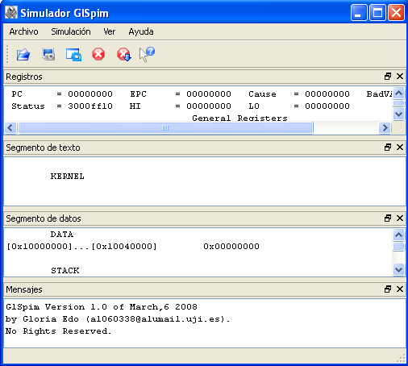
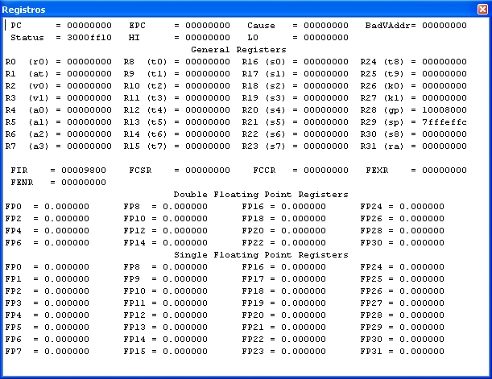
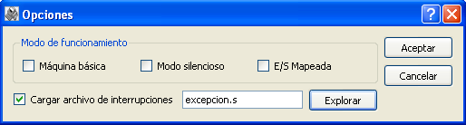

El texto de esta ayuda aún no ha sido actualizado, aún sigue siendo el texto de ayuda del programa GlSpim.
Como fase previa a su reescritura, se ha simplificado el código HTML.
Tabla de contenidos
1. Comandos
1.1 Menú Archivo
1.2 Menú Simulación
1.3 Menú Ver
1.4 Menú Ayuda
2. Manual de usuario
2.1 Introducción
2.2 Descripción del simulador GlSpim
2.3 Sintaxis del Lenguaje ensamblador del MIPS R2000
El menú archivo ofrece los siguientes comandos para el tratamiento de archivos:
En el menú simulación se encuentran los comandos relacionados con la simulación de la ejecución del programa actualmente ensamblado, que son los siguientes:
En el menú ver encontramos los comandos relacionados con la visualización de los distintos elementos que componen la aplicación, estos comandos son:
En el menú ayuda encontramos los comandos de ayuda para asistir al usuario, son los siguientes:
El SPIM (MIPS al revés) es un simulador que ejecuta programas en lenguaje ensamblador para los computadores basados en los procesadores MIPS R2000/R3000. La arquitectura de este tipo de procesadores es RISC, por lo tanto simple y regular, y en consecuencia fácil de aprender y entender.
La pregunta obvia en estos casos es por qué se va a utilizar un simulador y no una máquina real. Las razones son diversas: entre ellas cabe destacar la facilidad de poder trabajar con una versión simplificada y estable del procesador real. Los procesadores actuales ejecutan varias instrucciones al mismo tiempo y en muchos casos de forma desordenada, esto hace que sean más difíciles de comprender y programar.
Este simulador es una versión gráfica del SPIM llamado GlSpim.
Al ejecutar GlSpim aparece la siguiente ventana:

La ventana principal de GlSpim se divide en tres partes:
A continuación se presentan las características de estas cuatro ventanas:
Aparecen el nombre y el contenido de los registros enteros, R0 a R31, con sus correspondientes alias entre paréntesis, los registros de coma flotante, FP0 a FP31, los registros de control de la CPU (BadVAddr, Cause, Status, EPC) y los registros especiales para la multiplicación y división entera, HI y LO.

Se pueden ver cada una de las direcciones, el código máquina, las instrucciones ensambladas y el código fuente del programa de usuario (a partir de la dirección 0x00400000) y del núcleo del simulador (a partir de la dirección 0x80000000).
Aparecen las direcciones y datos almacenados en las zonas de memoria de datos del usuario (a partir de la dirección 0x10000000 en adelante), el núcleo del simulador (a partir de la dirección 0x90000000) y la pila (el puntero de pila, registro sp, se encuentra cargado con la dirección 0x7fffeffc, y ésta crece hacia direcciones decrecientes).
En este panel se observan los diversos mensajes que comunica el simulador, que nos tendrán informados del resultado y evolución de las acciones que éste lleva a cabo.
Existe una quinta ventana, llamada Consola, independiente, a la que se accede con la opción Ver->Consola, y que sirve para realizar la entrada/salida del programa simulado. En esta ventana se teclean los datos de entrada, cuando sean necesarios, y se lee la información que pueda imprimir nuestro programa.
Los ficheros de entrada a GlSpim son de tipo texto ASCII, que incluyen las instrucciones ensamblador del programa que se desea simular.
Para cargar un programa se selecciona Archivo->Abrir (o el botón Abrir de la barra de herramientas, con el icono de la carpeta abriéndose) con lo que aparecerá un cuadro de diálogo donde se puede seleccionar el fichero que se quiere abrir.
Para ejecutar el programa, Simulación->Ejecutar (o el botón de Ejecutar programa de la barra de herramientas), hará que GlSpim comience a simularlo. Previamente pedirá que se le indique la dirección de comienzo del programa (en hexadecimal). En nuestro caso este valor será normalmente 0x00400000 (donde comienza nuestro segmento de texto). Si se desea detener la ejecución del programa, Simulación->Detener ejecución (o el botón de Detener ejecución de la barra de herramientas).
Si el programa incluye operaciones de lectura o escritura desde el terminal, GlSpim despliega una ventana independiente llamada Consola, a través de la cual se realiza la entrada-salida (se simula un terminal de la máquina MIPS).
Si un programa no hace lo que se esperaba, hay algunas características del simulador que ayudarán a depurar el programa. Con Simulación->Ejecución paso a paso (o bien la tecla F10) es posible ejecutar las instrucciones del programa una a una (paso a paso). Esto permite verificar el contenido de los registros, la pila, los datos, etc., tras la ejecución de cada instrucción. Empleando Simulación->Ejecución Multipaso se consigue ejecutar el programa un número determinado de instrucciones.
GlSpim también permite ejecutar todas las instrucciones de un programa hasta llegar a un determinado punto, denominado breakpoint (punto de ruptura), a partir del cual se puede recuperar el control del programa y, por ejemplo, continuar paso a paso. Para ello, se selecciona Simulación->Puntos de ruptura (o el botón Puntos de ruptura de la barra de herramientas). Una vez seleccionada esa opción, GlSpim muestra una ventana en la que pide la(s) dirección(es) en la(s) que se quiere que el programa se detenga, para recuperar el control sobre el mismo. Se debe mirar cuál es la dirección en que interesa parar el programa, en la ventana del segmento de texto, e introducirla (en hexadecimal) en la ventana, pulsando a continuación la tecla 'Añadir', para añadir dicho breakpoint. Se pueden introducir tantos puntos de ruptura como se desee.
Una vez encontrado el error y corregido, se vuelve a cargar el programa con Simulación->Recargar<nombre_fichero>. Con Simulación->Limpiar registros se pone el contenido de los registros a cero (excepto $sp), mientras que con Simulación->Reinicializar se reinicializa el contenido de los registros y de la memoria.
Cuando es necesario conocer el valor de los símbolos globales o de un rango de memoria en concreto con Simulación->Imprimir valor se imprimen en la ventana de mensajes los valores solicitados. Con Simulación->Fijar valor se cambia el valor actual de un registro o de una posición de memoria por un valor arbitrario.
Al elegir la opción Simulación->Opciones se muestran las diversas opciones que ofrece el simulador. GlSpim utiliza estas opciones para determinar cómo cargar y ejecutar los programas. Una vez escogida esta opción aparece la siguiente ventana

El significado de las opciones es el siguiente:
La sintaxis del lenguaje ensamblador es algo que se descubrirá poco a poco, pero es interesante introducir algunos conceptos básicos:
Comentarios
Estos son muy importantes en los lenguajes de bajo nivel ya que ayudan a seguir el desarrollo del programa y, por tanto, se usan con profusión. Comienzan con un carácter de almohadilla "#" y desde este carácter hasta el final de la línea es ignorado por el ensamblador.
Identificadores
Son secuencias de caracteres alfanuméricos, guiones bajos (_) y puntos (.), que no comienzan con un número. Los códigos de operación son palabras reservadas que no pueden ser utilizadas como identificadores.
Etiquetas
Son identificadores que se sitúan al principio de una línea y seguidos de dos puntos. Sirven para hacer referencia a la posición o dirección de memoria del elemento definido en ésta. A lo largo del programa se puede hacer referencia a ellas en los modos de direccionamiento de las instrucciones.
Pseudoinstrucciones
No son instrucciones que tengan su traducción directa al lenguaje máquina que entiende el procesador, pero el ensamblador las interpreta y las convierte en una o más instrucciones máquina reales. Permiten una programación más clara y comprensible. A lo largo del desarrollo de las prácticas se irán introduciendo diferentes pseudoinstrucciones que permite utilizar este ensamblador.
Directivas
Tampoco son instrucciones que tengan su traducción directa al lenguaje máquina que entiende el procesador, pero el ensamblador las interpreta y le informan a éste de cómo tiene que traducir el programa. Son identificadores reservados, que el ensamblador reconoce y que van precedidos por un punto. A lo largo del desarrollo de las prácticas se irán introduciendo las distintas directivas que permite utilizar este ensamblador.
Por otro lado, los números se escriben, por defecto, en base 10. Si van precedidos de 0x, se interpretan en hexadecimal. Las cadenas de caracteres se encierran entre comillas dobles ("). Los caracteres especiales en las cadenas siguen la convención del lenguaje de programación C:
A la hora de generar un fichero con un programa en ensamblador (extensión .s), hay que tener en cuenta que algunas versiones del SPIM tienen un "bug", que se evita haciendo que los códigos en ensamblador almacenados en estos ficheros terminen siempre con una línea en blanco (vacía).